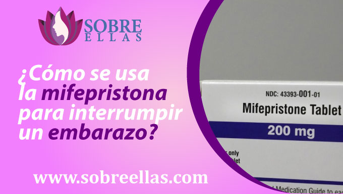
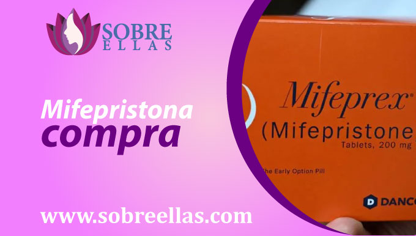

Mifepristona Precio
-
addContenidoMifepristona lima ¿Cómo se usa la mifepristona para interrumpir un embarazo? Efectos secundarios Mifepristona compra Venta de Mifepristona Efectividad de la Mifepristona ¿La mifepristona está aprobada por la FDA? Aborto Incompleto Sintomas No sangre luego de tomar Mifepristona Abortar o conservar mi embarazo
Tal vez te acabas de enterar de tu embarazo y buscas un medicamento que te ayude a abortar, te recomendamos que confíes ciegamente en estas poderosas pastillas abortivas, que se usan para inducir el parto pero también para tratar el sangrado posparto, los calambres y prevenir el parto prematuro. Estas píldoras abortivas de mifepristona tienen un precio muy económico y están disponibles en nuestro sitio web en forma de cápsulas sin receta médica.
Mifepristona lima
Lima es el centro de la ciudad y el lugar de comercialización y venta de diversos productos, incluidos productos que hasta el momento no han sido legalizados en nuestro país, pero sí en otros países. La mifepristona es un compuesto farmacológico que se utiliza para realizar una variedad de intervenciones abortivas. Si necesitas asesoramiento en la compra de esta pastilla abortiva mifepristona, puedes contactarnos a través de esta página y nuestro médico especialista se pondrá en contacto contigo
¿Cómo se usa la mifepristona para interrumpir un embarazo?
La mifepristona se usa frecuentemente para interrumpir un embarazo de tres formas. La primera forma es tomando pastillas abortivas por vía oral. La segunda forma es mediante el uso de un inserto vaginal.
- Aplicación vía oral
- Aplicación vía sublingual
- Aplicación vía vaginal
- Lugar donde se realizara el aborto
- Cantidad de Pastillas mifepristona a usar
Aplicación vía oral
Una mujer que acaba de enterarse de que está embarazada y quiere interrumpirlo, luego de haber discutido si conservar o no su embarazo y la condición específica que está tratando de manejar con su médico antes de tomar mifepristona. Él médico se encargará de la dosis recomendada de mifepristona que sea mejor para usted.Si está tomando medicamentos por primera vez, su médico le dará una receta para el medicamento y debe tomarlo según lo prescrito. Si está usando tabletas orales de mifepristona, es importante beber mucho líquido mientras toma el medicamento. Además, abstenerse de comer durante al menos 2 horas antes de tomar el medicamento. Después de tomar misoprostol, es importante esperar al menos 2 horas antes de tener relaciones sexuales o hasta que se detenga el sangrado (un efecto secundario). Además, evite beber alcohol antes, durante y después de tomar este medicamento.
Aplicación vía sublingual
Se debe colocar 4 pastillas bajo la lengua durante media hora (30 minutos), esperar a que se disuelvan para luego volver a repetir el procedimiento por 3 veces más dejando unas 3 horas de diferencia entre toma y toma.
Aplicación vía vaginal
Se recomienda que para este modo de aplicación, que la paciente se encuentre acostada boca arriba y debe colocar 4 pastillas entre los labios vaginales durante media hora (30 minutos), esperar a que se disuelva (permaneciendo acostada) para luego volver a repetir el procedimiento por 3 veces más dejando unas 3 horas de diferencia entre toma y toma.
Lugar donde se realizara el aborto
Recuerda que el primer paso a seguir consiste en encontrarte en un lugar tranquilo y cómodo, donde se llevará a cabo todo el proceso. En eso el médico a cargo te da la libertad completa de elegirlo, ya que el proceso a realizar es no invasivo.
Cantidad de Pastillas mifepristona a usar
La dosis va a variar según el tiempo de gestación que tengas, es por eso que lo recomendable siempre es consultar previamente con tu médico a cargo. La dosis común que suelen recomendar son las de 12 pastillas abortivas que se irán intercalando en 3 dosis cada 3 horas
Efectos Secundarios
Las pastillas abortivas mifepristona pueden causar varios efectos secundarios, los más comunes de los cuales son diarrea y vómitos. Algunas personas también experimentan dolor, fiebre e ictericia. Si experimenta algún efecto secundario mientras está tomando misoprostol, debe comunicarse con su médico. Algunos de los efectos secundarios más comunes del mifepristona incluyen calambres, diarrea y vómitos.
Mifepristona compra
La preocupación de haberte enterado que estas embaraza en un momento que no esperabas dentro de tus planes, te desespera y no sabes a donde acudir o qué hacer para no ser madre. Si ya tomaste tu decisión y estás en busca de métodos abortivos más eficaces y menos riesgosos, lo recomendable es el uso farmacológico para abortar. Estas pastillas abortivas podrás adquirirlas en cualquier centro o farmacia de salud con solo presentar tu receta médica, en caso no cuentes con ella, puedes ponerte en contacto con nosotros mediante nuestra página, para que te ayudemos sin necesidad de tener que solicitarla.
Venta de Mifepristona
Realizar la venta de mifepristona en muchos países, suele no ser complicado, pero para las personas que se encuentran en peru y desean vender o simplemente adquirir este producto se vuelve un poco complicado, la adquisición de forma legal . En primer lugar por el tema de las legalidades de la venta de mifepristona. En segundo lugar, esperará tener una buena comprensión de cómo funciona el misoprostol. En tercer lugar, tendrás que asegurarte de que tienes un buen producto. Asegúrate de que estas pastillas abortivas que estás adquiriendo son de alta calidad y libres de cualquier contaminante. Existen muchos lugares que te lo pueden ofrecer sin receta médica, pero en su mayoría no garantizan la seguridad y el asesoramiento durante el proceso a diferencia de nosotros.
Efectividad de la Mifepristona
La forma más segura y menos complicada de interrumpir un embarazo, según estudios, es mediante el consumo de pastillas abortivas. La mifepristona es un medicamento que se usa para interrumpir un embarazo. Es una combinación de dos fármacos, misoprostol y progesterona. La mifepristona funciona deteniendo el crecimiento del embarazo y, en la mayoría de los casos, terminando el embarazo. Estas pastillas abortivas son un medicamento eficaz para interrumpir un embarazo. En los ensayos clínicos, se encontró que era 93% eficaz en la terminación de un embarazo. Esto significa que por cada tres embarazos que terminaron usando mifepristona, solo uno habría tenido éxito si el aborto no hubiera estado usando mifepristona. La mifepristona también es segura. En ensayos clínicos, se encontró que era seguro y bien tolerado. Los efectos secundarios eran raros, y generalmente consisten en dolor leve y calambres. No hay riesgo de defectos de nacimiento si se usa mifepristona para interrumpir un embarazo. En resumidas cuentas es un medicamento eficaz y seguro para interrumpir un embarazo. Es el estándar de atención para interrumpir un embarazo en el primer trimestre. Si está considerando interrumpir un embarazo con mifepristona, hable con su médico o comuníquese por este medio con nuestros especialistas, para que también te pueda guiar durante tu proceso abortivo.
¿La mifepristona está aprobada por la FDA?
Si, la mifepristona se encuentra aprobada por la FDA como un medicamento que se usa para tratar las úlceras estomacales y otras afecciones. También se utiliza para abortar un embarazo. La mifepristona está disponible como un comprimido y un líquido. La forma de tableta generalmente se toma por vía oral. La forma líquida puede inyectarse en la vena, tomarse por vía oral o inyectarse en el músculo. Hay varias maneras de usar mifepristona para interrumpir un embarazo. La forma más común es tomar misoprostol por vía oral (por vía oral). También puede inyectar mifepristona por vía vaginal (en la vagina). También puede usar una jeringa para inyectar mifepristona en el recto. Sin embargo, como cualquier medicamento, existen varios riesgos y efectos secundarios asociados con el uso de misoprostol para interrumpir un embarazo. Los riesgos más comunes son que el aborto no tendrá éxito y que la mujer puede experimentar efectos secundarios graves. Por lo tanto, es importante hablar con un médico antes de usar mifepristona para interrumpir un embarazo, ya que él evaluará la dosis adecuada y necesaria para el tiempo de embarazo que tengas.
Aborto Incompleto Sintomas
Existe una variedad de síntomas que pueden presentarse después de un aborto incompleto, tanto conocidos como desconocidos. El síntoma más común de aborto incompleto son los calambres. Esto ocurre en aproximadamente la mitad de las mujeres que presentan un aborto. Los calambres pueden ser leves o graves y pueden durar horas o días. Otros síntomas de aborto incompleto incluyen flujo vaginal, náuseas y vómitos. Enotros casos, el aborto incompleto puede causar un aborto espontáneo. Algunos de los síntomas desconocidos que pueden ocurrir después de un aborto pueden incluir:
1. Infecciones . Luego de realizarte un aborto, es importante tomar medidas necesarias para evitar cualquier infección. Esto incluye evitar la actividad sexual hasta que todo el proceso haya terminado, tu dejes de sangrar y sientas que tu cuerpo ya está recuperado por completo. Lo ideal es realizar actividades o guardar reposo según lo que te indique el especialista y tomar antibióticos según lo prescrito.
2. Sangrado excesivo. Si experimenta sangrado excesivo, mayor a que el médico te indico previo al proceso, es importante acudir a una revisión médica lo antes posible. Ya que podría ser una alarma indicativa de una complicación y puede requerir antibióticos de mayor efecto o cirugía.
3. Muerte. Aunque poco comun, la muerte puede presentarse después de un aborto y es una de las muchas cosas que hacen desanimar a toda chica al escuchar la palabra aborto. Y no, aborto no es sinonimo de muerte, todo dependera del especialista que lleve tu caso, de la informacion y obediencia al pie de la letra que recibas, de la realizacion del proceso, de tu estado actual de salud, del tiempo de gestacion con el que cuentes, del cuidado pre, durante y despues que le des a tu cuerpo.
Si aún así llegas a experimentar algún signo o síntoma que sugiera que puede estar experimentando una emergencia médica, vaya al hospital.
No sangre luego de tomar Mifepristona
Existen casos muy poco comunes en los que se presenta esta situación y en donde se tendría que descartar muchos factores previos para tener una conclusión específica. El primero es saber si la paciente, anteriormente ya se ha realizado algun tipo de aborto de este tipo, porque a medida que se realizan mas y mas, el cuerpo reacciona haciendo mas largo este proceso. Segundo, se tendría que entender, no todos los cuerpos son iguales, por lo tanto no reaccionan de la misma forma. Tercero, tener en cuenta también que una de las funciones principales del misoprostol en nuestro cuerpo y que mucho desconoces, es su actuar como bloqueo de la acción de las prostaglandinas, que son sustancias químicas que ayudan a reducir la cantidad de sangre que fluye en las venas. En cualquiera de esos casos, se tendría que informar al médico encargado de tu proceso, ni bien pase el límite de tiempo establecido y si no notas cambios, que sea posible actuar dentro del tiempo para una solución que ayude a completar el aborto de forma segura.
Abortar o conservar mi embarazo
Probablemente desde que recibiste la noticia te preguntas ¿Cómo fue que sucedió ? y peor aún si utilizaban anticonceptivos para cuidarte. Lamentablemente en todo anticonceptivo, existe una leve posibilidad de no funcionar y al parecer te toco a ti. Aceptar ser madre o dejar de serlo, probablemente es lo mas dificil que te esta tocando elegir, pero no entres en pánico, esto es algo que debes meditarlo y discutirlo con tu pareja entre cuatro paredes, pero recuerda: Es tu cuerpo el que está de por medio, eres tú quien cargará el embarazo durante los 9 meses, eres tu quien sufrirá los síntomas comunes de todo el proceso, pero después de eso tendrás a tu hijo en brazos, así que medita si cuentas con las posibilidades necesarias para darle una ideal calidad de vida o cual seria la mejor decisión para ti en este momento. Recuerda que no estás sola, pero la decisión la tomas tú. En caso decidas desistir de tu embarazo y necesites mayor asesoría, no dudes en comunicarte a nuestros números que adjuntamos, para que nuestro equipo de especialista te pueda apoyar.